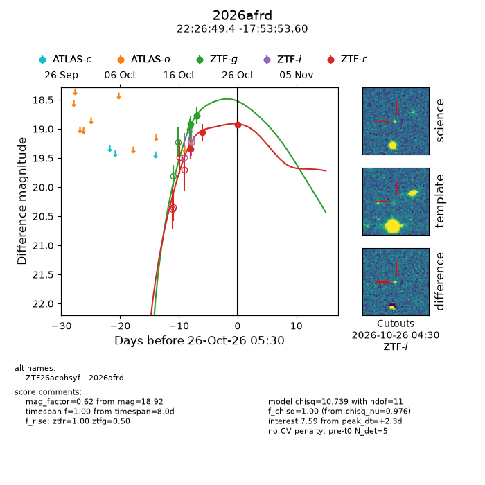
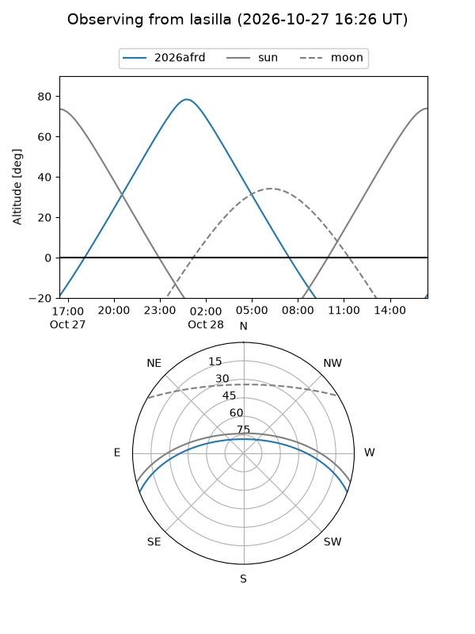
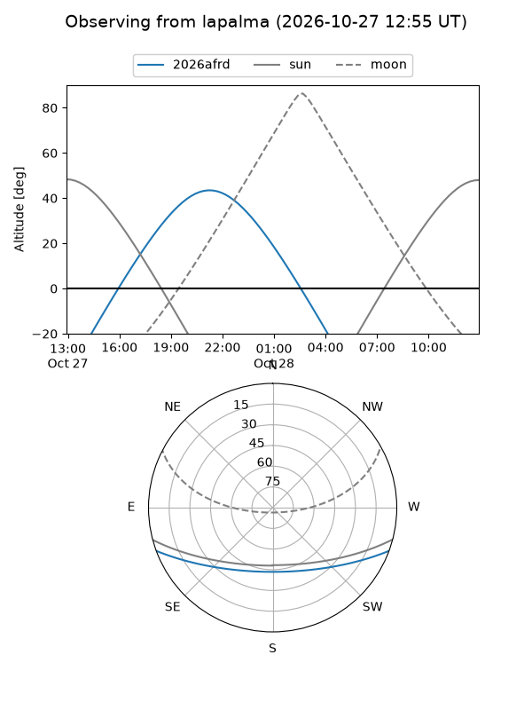
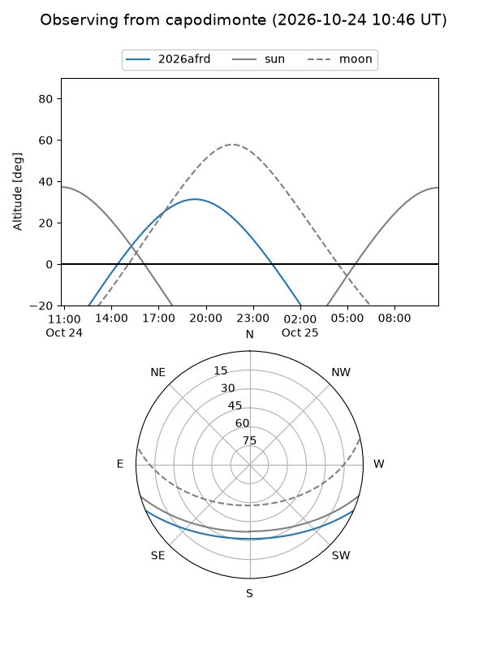
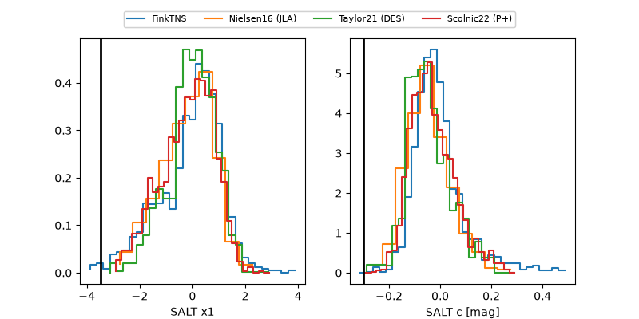

2026afrd
Target 2026afrd at 2026-10-26 05:31
Aliases and brokers:
FINK-ZTF: ztf.fink-portal.org/ZTF26acbhsyf
Lasair-ZTF: lasair-ztf.lsst.ac.uk/objects/ZTF26acbhsyf
ALeRCE-ZTF: alerce.online/object/ZTF26acbhsyf
YSE-PZ: ziggy.ucolick.org/yse/transient_detail/2026afrd
TNS name: wis-tns.org/object/2026afrd
Direct TNS query: direct search
alt names
ZTF26acbhsyf (ztf,fink_ztf)
2026afrd (tns,yse)
Coordinates:
equatorial (ra, dec) = 336.7059,-17.89822
equatorial (HMS+DMS) = 22:26:49.41,-17:53:53.60
galactic (l, b) = (40.7260,-55.48407)
Flags:
peak dt: +2.3
Photometry:
last ztfg=18.77, ztfr=18.92
3 ztfg, 3 ztfr detections
Lightcurve

Visibility



Additional plots
